Urban Data & Design Game
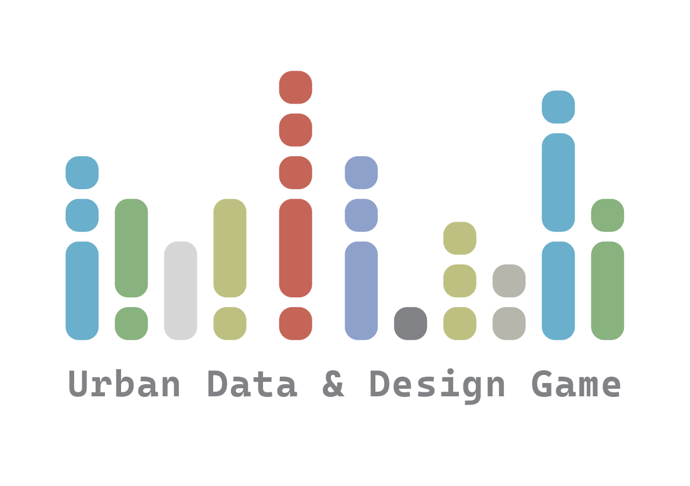
The Rulebook
This page is the online version of the rulebook.
The Objective
The objective of the game is to use data as an integrated factor of thinking about the city’s future. Using different datasets available, we aim to speculate the future that takes into account the various risks that are often overlooked but should be included in the decision-making process.
The components
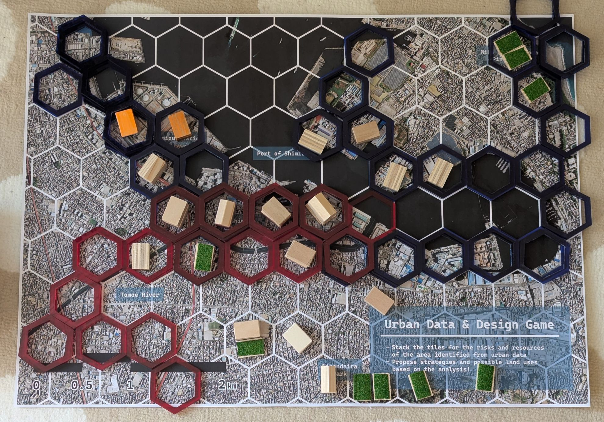
The hexagons
The hexagons come in 2 colours, blue and red. Depending on the situation and your likings, these can be used to represent various things - either positive or negative.
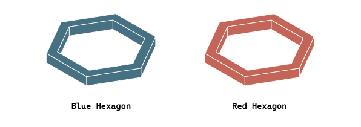
Here are some of the ways these can be used.
Two types of risks
The two colours can be used to indicate two different types of risks, for instance the following:
| Blue | Red |
|---|---|
| Flooding | Tsunami |
| Flooding | Earthquake |
| Earthquake | Liquefaction |
Risk and Potential
Alternatively, one colour can be assigned for risks whilst the other for potential, showing the tension between the two - harbourside areas might have a lot of potential, but might be risky.
| Blue (Potential) | Red (Risk) |
|---|---|
| Land Value | Flooding |
| Population | Flooding |
Potential should be stacked first, followed by a solid hexagon (this elevates the floor - high potential!), then the risks that surround the building.
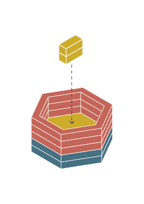
The Buildings
The building components can be placed to propose land uses in different areas.
Rectangle Buildings
The rectangular pieces are coloured to show uses:
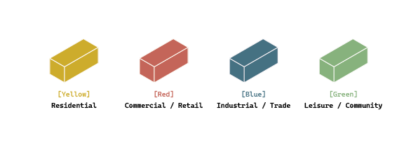
Alternatively, you can use the uncoloured ones to indicate other uses - feel free to colour in different colours!
Flatter buildings indicate low density development - may be handy in areas with small-scale evelopment.
Important Facilities
The pentagonal ‘house-shaped’ buildings show important points of interest that influence the surroundings. These include train stations, harbour facilities, large shopping centres, and leisure complexes. These are considered significant due to the potential positive impact they have on the surroundings, boosting the development potential for the area.
Green Spaces
Green space constitute an important aspect of the city, and have their own pieces. Sometimes river floodplains are converted into parks, storing floodwater to prevent damage to the built-up areas. We must not forget the World Heritage Site of Miho-no-Matsubara pine grove, which is a significant cultural asset of Shimizu!
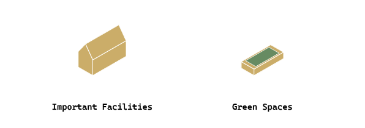
The Gemeplay
The gameplay is a fairly freeform structure, enabling the speculation of the players that are involved.
- Place the board on a large table, on a carpet, or anywhere at the middle of the group.
- Place the hexagons based on the chosen risks/potentials on the site.
- Looking at the data, discuss amongst yourselves on how the various functions of the city can be (or should not be) placed within the region.
- If there are any projects that change the risk/potential, feel free to move the hexagons.
- If the components of the game cannot express your opinions, bring other things into the conversation!
The Goal
The game will be finished when there were fruitful discussions about incorporating the various risk/potential factors within your urban design proposal as a team.
The Game Sheets
The following can be used a a guide to place the hexagons. For more information on the datasets, visit the Datasets page.
Risks within the Area
These are some of the risks that are apparent in Shimizu.
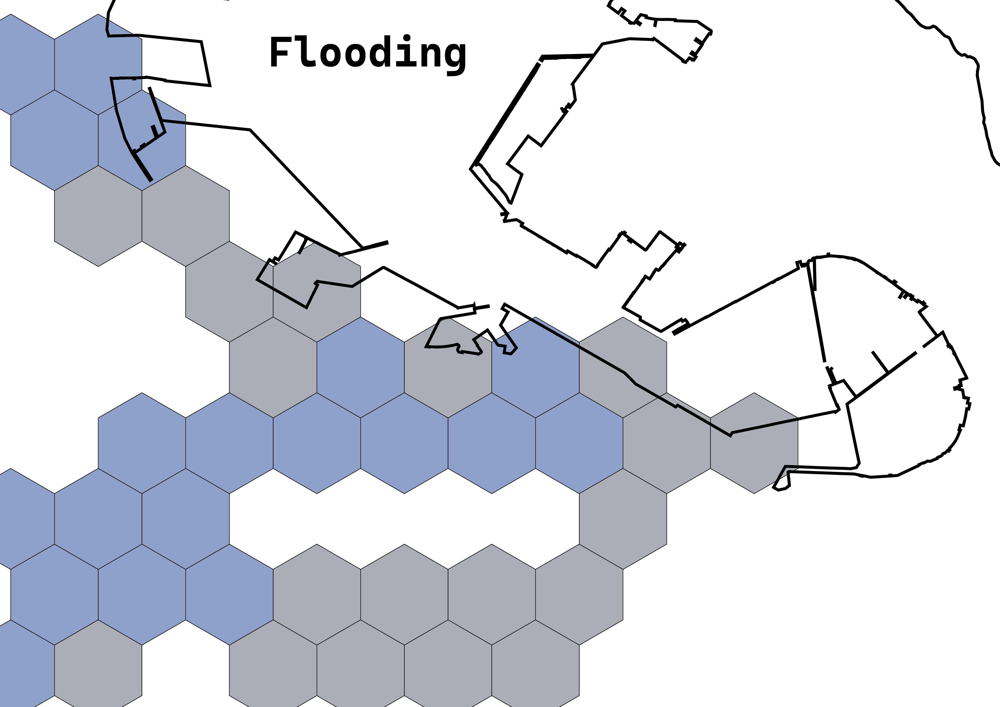
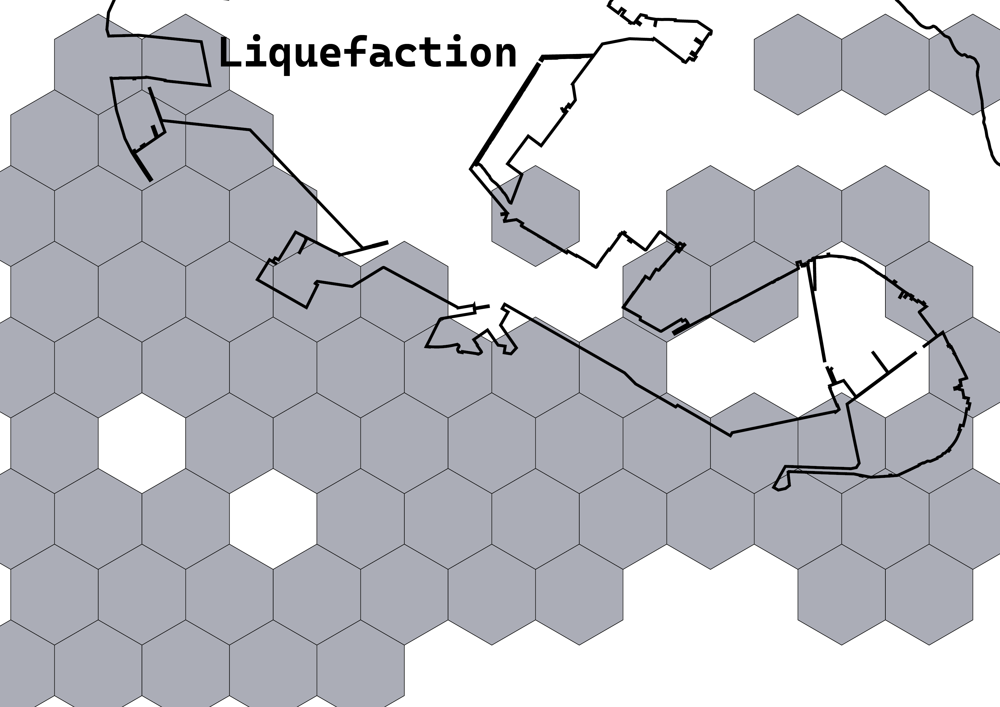
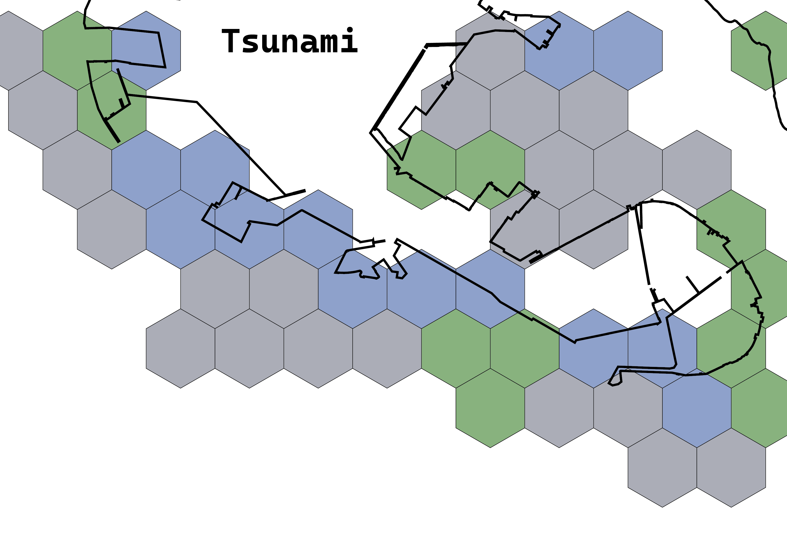
Potentials
Still, the city has its potentials that can be used in the game as well.
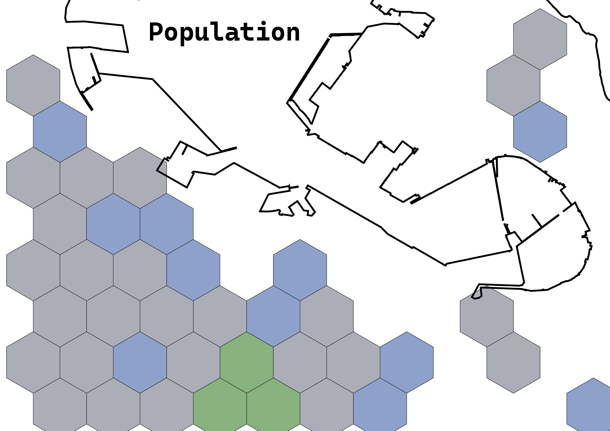
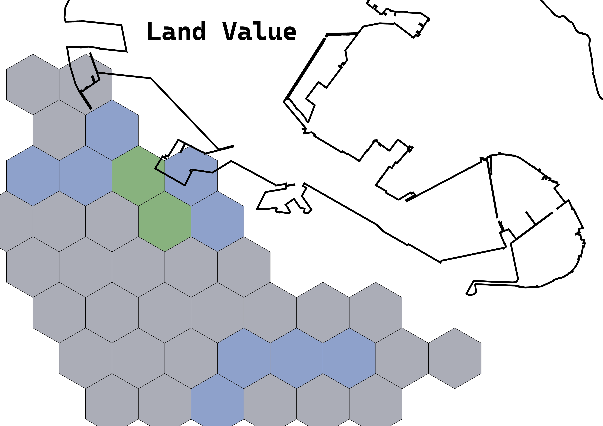